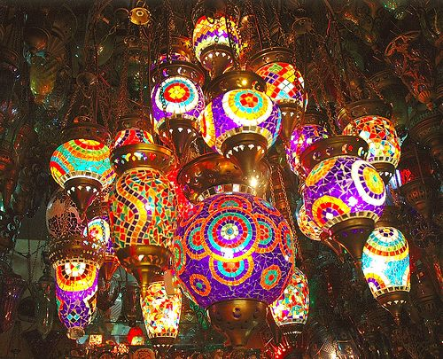

The culture of Turkey combines a heavily diverse and heterogeneous set of elements that have been derived from the various cultures of the Eastern Mediterranean (West Asian) and Central Asian region and to a lesser degree, Eastern European, and Caucasian traditions. Many of these traditions were initially brought together by the Ottoman Empire, a multi-ethnic and multi-religious state.  During the early years of the republic, the government invested a large amount of resources into fine arts such as paintings, sculpture and architecture. This was done as both a process of modernization and of creating a cultural identity. Because of the different historical factors defining the Turkish identity the culture of Turkey combines clear efforts of modernization and Westernization undertaken in varying degrees since the 1800s with a simultaneous desire to maintain traditional religious and historical values. The culture of Turkey combines a heavily diverse and heterogeneous set of elements that have been derived from the various cultures of the Eastern Mediterranean (West Asian) and Central Asian region and to a lesser degree, Eastern European, and Caucasian traditions. Many of these traditions were initially brought together by the Ottoman Empire, a multi-ethnic and multi-religious state. During the early years of the republic, the government invested a large amount of resources into fine arts such as paintings, sculpture and architecture. This was done as both a process of modernization and of creating a cultural identity. Because of the different historical factors defining the Turkish identity the culture of Turkey combines clear efforts of modernization and Westernization undertaken in varying degrees since the 1800s with a simultaneous desire to maintain traditional religious and historical values.